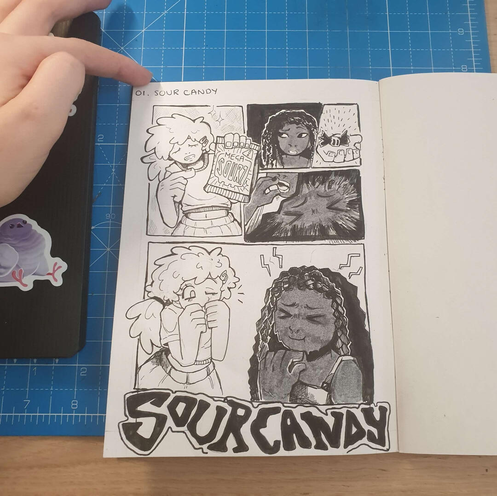
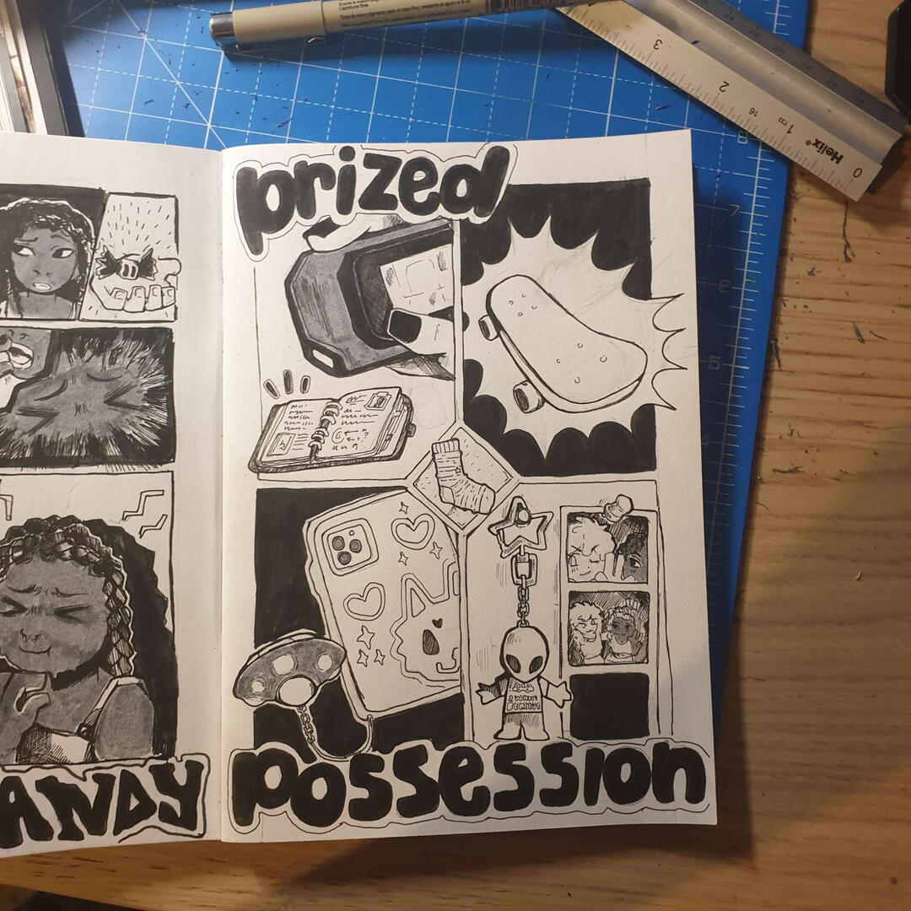
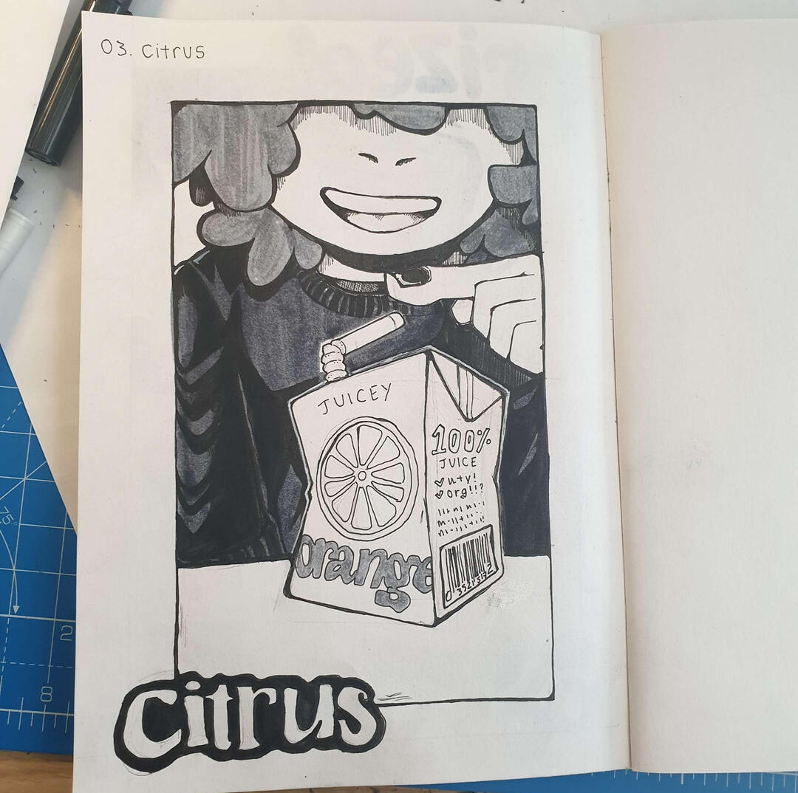
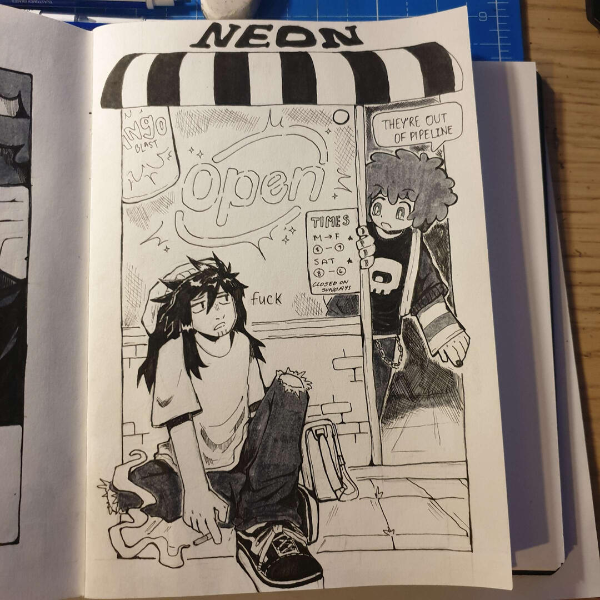
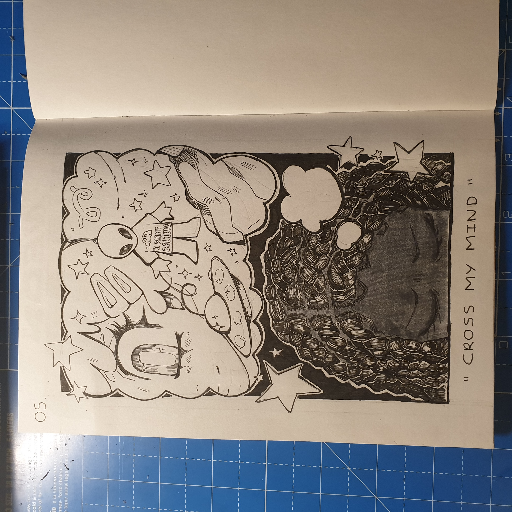
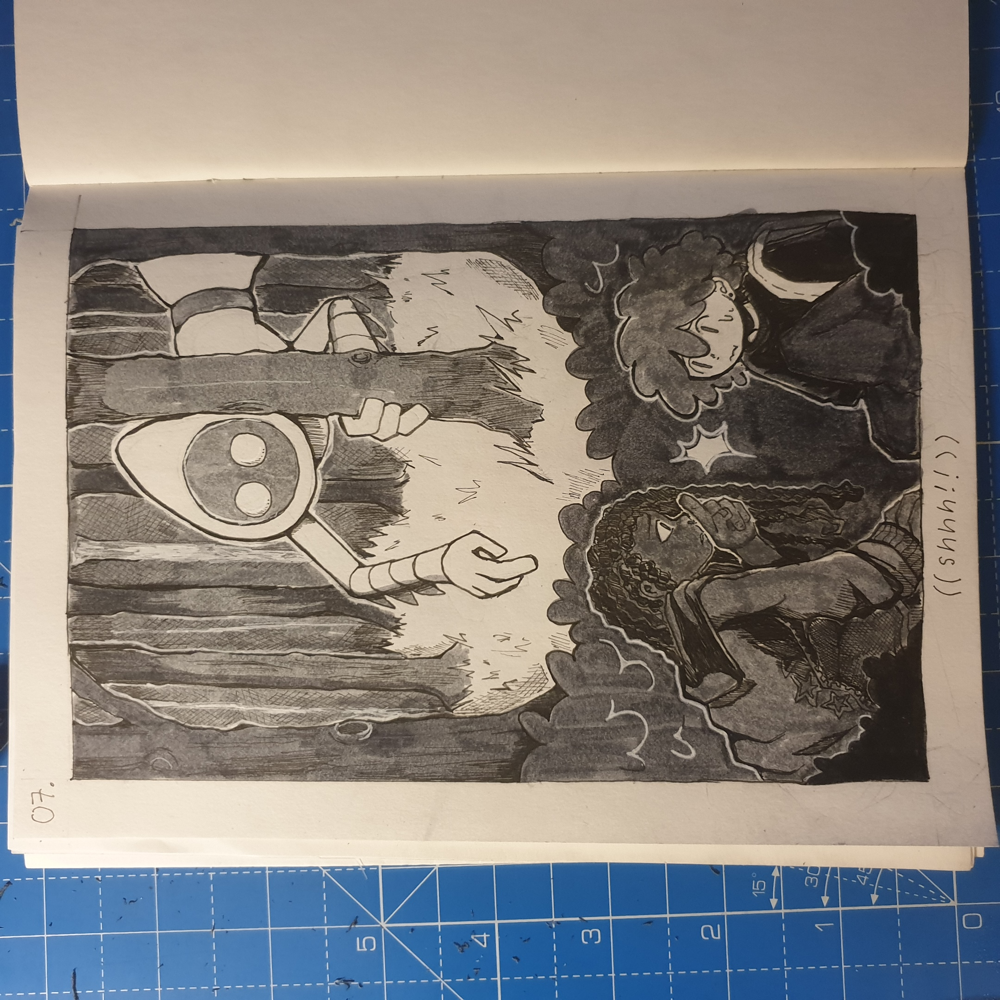
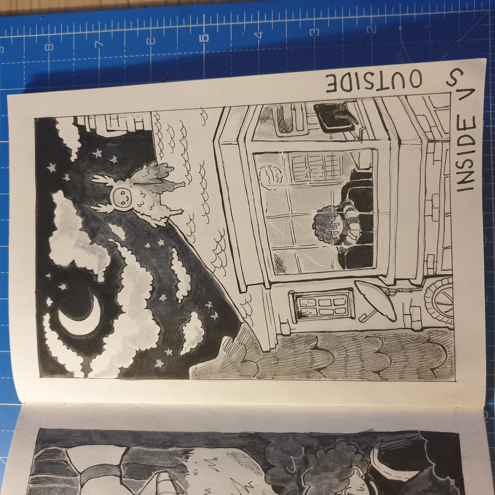
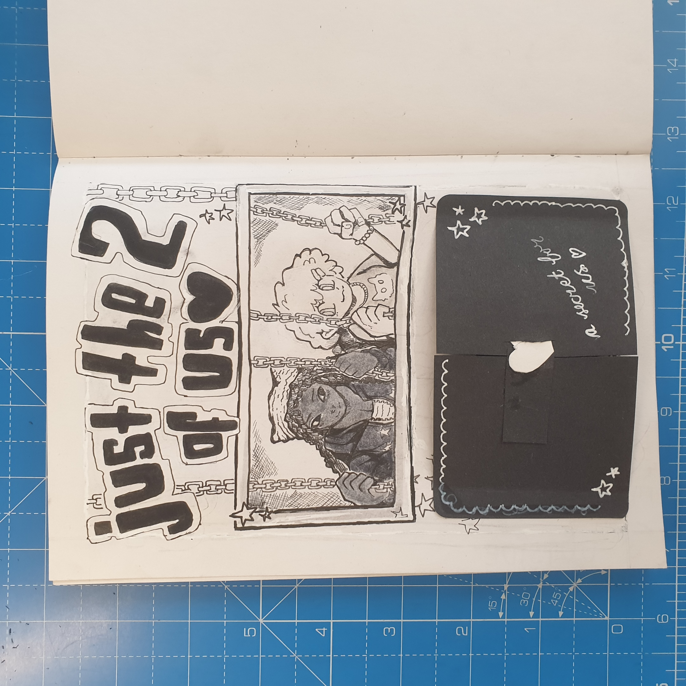
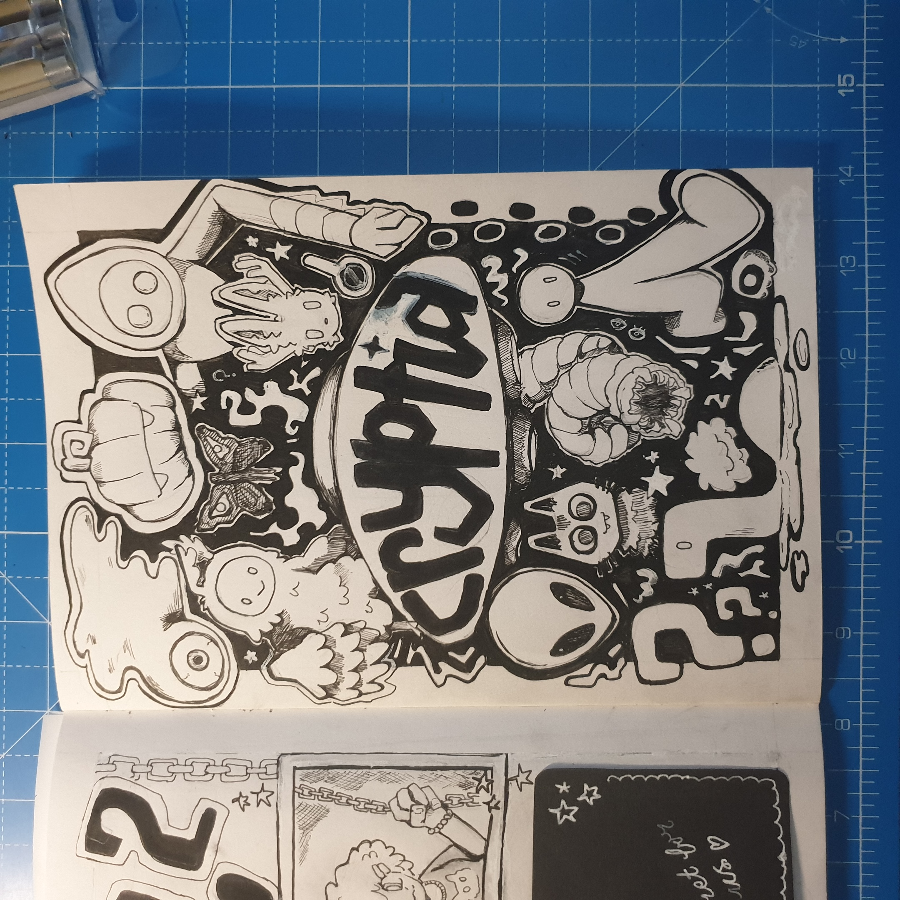
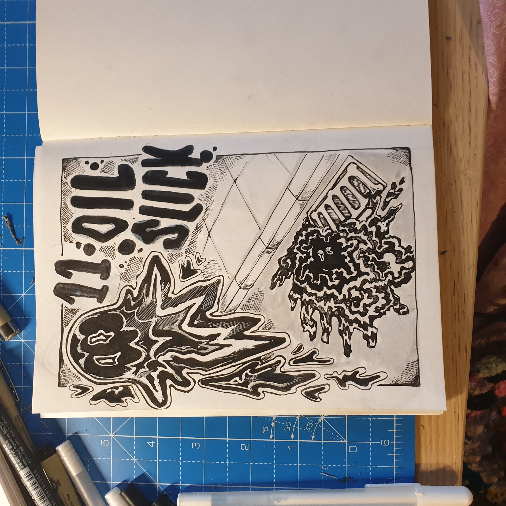

I'm currently working on the first issue of Cryptid Hunt and working through @magsmunroe's Inktober prompt list.
days
DAY 1 - SOUR CANDY
ASHTI: Guess who just got a pack of Mega Sourz?
JUDITH: Urgh, I bet they're not even that sour
ASHTI: Oh, rea~lly? Have one then
DAY 2 - PRIZED POSSESSION
Each panel is a different character's prized possession!
DAY 3 - CITRUS
juice :)
DAY 4 - NEON
i am not skilled enough to draw a good neon light in just greyscale, traditionally 👍
DAY 5 - CROSS MY MIND
"I wonder if you look both ways when you cross my mind."
DAY 6 - HIGH (OR LOW) CONTRAST

I picked high contrast for this. But man, today was rough so this is all I could muster out of me.
It's simple, but it definitely contrasts everything I've done so far, haha.
The usage of red ink will probably only happen here too.
DAY 7 - SHHH!
Better be quiet
DAY 8 - INSIDE VS OUTSIDE
i wonder what lays outside, just out of sight - but never out of mind
DAY 9 - JUST THE TWO OF US
just the two of us...
DAY 10 - CRYPTID >:-)
this is like the whole reason why i picked this prompt list
DAY 11 - OIL SLICK
he's a lil oil cryptid :)